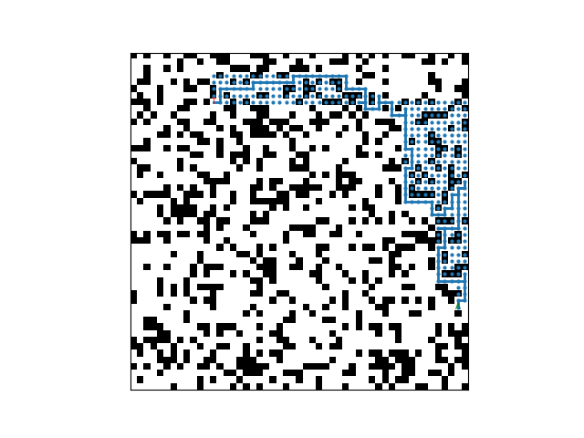
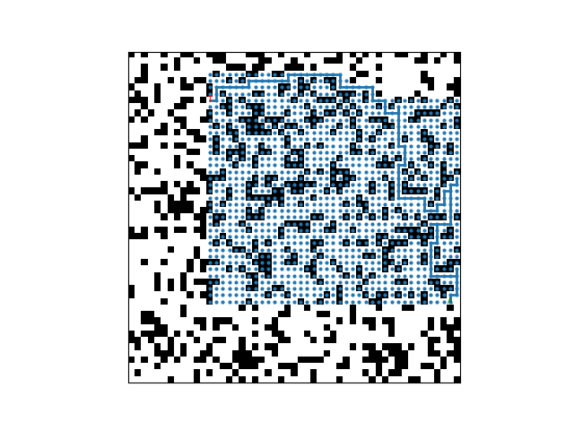

Artificial Intelligence & Search Algorithms
A* Pathfinding & Adaptive Search
An experimental comparison of A* search strategies across randomly generated 51×51 grid environments, analyzing pathfinding behavior, replanning, tie-breaking strategies, and search efficiency.
Project Overview
This project explored how different A* search strategies behave when an agent must navigate partially known grid environments. The experiments used randomly generated 51×51 grids with a 30% probability that each cell would be blocked.
I implemented Forward A*, Repeated Forward A*, Repeated Backward A*, and Adaptive A*. Each algorithm used four-directional movement and Manhattan distance as its heuristic while navigating from a randomly selected start cell to a target cell.
The project also compared high-g and low-g tie-breaking strategies and measured factors including path length and the number of expanded cells. Tests across 30 randomly generated environments provided a consistent basis for comparing the behavior and efficiency of the different search strategies.
Search Strategies
Multiple variations of A* were implemented to examine how search direction, replanning, and learned information affect pathfinding efficiency in partially known environments.
Forward A*
Searches from the agent's current position toward the target using Manhattan distance to guide the search. High-g and low-g tie-breaking strategies were compared to evaluate their effect on expanded cells.
Repeated Forward A*
Plans a path toward the target using currently known information. When the agent discovers a blocked cell, the search is repeated from its new position using the updated grid knowledge.
Repeated Backward A*
Performs each replanning search in the opposite direction, searching from the target toward the agent's current position while incorporating newly discovered obstacles.
Adaptive A*
Reuses information from previous searches by updating heuristic values for expanded states, allowing later searches to make use of knowledge gained during earlier planning.
High-g vs. Low-g Tie-Breaking
When multiple states have the same A* priority value, the tie-breaking strategy determines which state is explored first. I compared strategies that favor larger g-values against those that favor smaller g-values to measure how this choice affects the number of expanded cells.
High-g Tie-Breaking

Favoring larger g-values produced a more directed search toward the target, reducing the number of states explored unnecessarily.
Low-g Tie-Breaking

Favoring smaller g-values caused the search to expand a much broader region of the grid before reaching the target.
Adaptive A*
Adaptive A* extends repeated search by using information learned during previous searches. After a search is completed, heuristic values for expanded states are updated using the cost of the discovered path to the target.
Adaptive Search Visualization
As the agent discovers blocked cells and replans, Adaptive A* can reuse information gathered during earlier searches rather than treating every new search as an entirely independent problem. Across the experiments, this reduced the number of expanded cells while producing paths of similar length.
Key Results
Averaging results across 30 randomly generated grid environments revealed substantial differences in search efficiency even when the algorithms produced paths of similar length.
High-g vs. Low-g
Repeated Forward A* with high-g tie-breaking averaged 460 expanded nodes compared with 2,404 using low-g, while producing similar path lengths.
Forward vs. Backward
Repeated Forward A* expanded substantially fewer nodes than Repeated Backward A*, while average path lengths remained similar.
Adaptive A*
Adaptive A* produced the lowest average expanded-node count among the repeated-search comparisons while maintaining a similar path length.
Key Takeaways
This project demonstrated that algorithms producing similar final paths can require dramatically different amounts of search work. In particular, the choice of tie-breaking strategy had a major effect on the number of expanded nodes without substantially changing the resulting path length.
Adaptive A* also demonstrated the value of retaining information across repeated searches. By updating and reusing heuristic values, the algorithm was able to make increasingly informed decisions as new obstacles were discovered.
I also examined the memory cost of my Python implementation and found that its use of lists, sets, dictionaries, and priority queues would limit its ability to scale to much larger grids. A more memory-efficient implementation could replace several of these structures with fixed-size arrays of bits and integers.